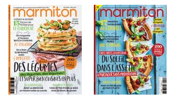

LA tarte au citron
Selon nos informations, cette recette est compatible avec le régime suivant :
végétarien
| Dessert | Végétarien | Tarte |
| Tarte au citron | ||


24
1,1K


| Temps | Personnes | Trés facile | Bon marché |
| 35min | 10 |
|---|
| Ingrédients | Ustensiles |
|---|
Nombre de personnes
 300 g de pâte brisée 300 g de pâte brisée |
|---|
 5cl de cointreau ( ou d'alcool de prune) 5cl de cointreau ( ou d'alcool de prune) |
 40g de maizena 40g de maizena |
 150g de sucre en poudre 150g de sucre en poudre |
 2 citrons non traités 2 citrons non traités |
 50g de beurre 50g de beurre |
 3 oeufs 3 oeufs |
 75g de sucre semoule pour la meringue 75g de sucre semoule pour la meringue |
Préparation
| Temp Total: 35 min | |
|---|---|
| Préparation: 20 min | Cuisson : 15 min |
- Préchauffez le four à 210°C(thermostat 7 ).
- Mettez votre pâte dans un plat passant au four et piquez le fond à la fourchette.
- Puis, mettez du papier sulfurisé sur votre pâte et enfin placez un autre plat (plus petit que le premier) sur le papier et la pâte (cela permet de cuire la pâte à blanc sans qu'elle ne gonfle ou ne brûle).
- Faites précuire 15 min au four.
- Lavez les citrons, râpez le zeste. Pressez-les, versez le jus dans un verre gradué avec le Cointreau et de l'eau pour obtenir 40 cl.
- Portez le tout à ébullition dans une casserole.
- Dans un saladier à part battez les jaunes d'oeufs et le sucre jusqu'à ce que le mélange blanchisse. Ajoutez la maïzena et le zeste de citron. Versez un peu de liquide chaud, délayez bien, puis reversez le tout dans la casserole. Faites épaissir sans cesser de remuer à la cuillère en bois sur feu moyen (le mélange ne doit surtout pas bouillir).
- Ôtez du feu, incorporez le beurre, laissez refroidir.
- Montez les blancs en neige bien ferme, puis ajoutez le sucre sans cessez de battre. Retirez le lestage de la tarte. Étalez-y la crème au citron puis la meringue.
- Pour finir, repassez la tarte 20 min au four. Si la meringue colore trop vite, baissez le thermostat à 5 (150°C).
- Servez bien froid; cette tarte peut aussi se préparer la veille.
- Bon appétit!
Top vidéo au hasard - Faire du pop corn

19/02/2020 08:31 A l'attention de Rebecca: pour faire cuire une pâte à blanc avec cette technique il faut mettre du papier sulfurisé ENTRE les plats. Sinon ça colle évidemment ! On a fait ce dessert pour un repas en famille et tout le monde a aimé. (C'était une version sans cointreau) Texture bien et bon goût de citron. ATTENTION cependant il ne faut pas laisser le four à 210 degrés lorsqu'on enfourne la tarte avec l'appareil et la meringue. J'imagine que 180, en surveillant, ça serait suffisant. |
|---|
|
19/11/2019 05:30 Excellente |
|
22/01/2019 07:57 Pour ma part, ça a raté dès la cuisson de la pâte sablée car avec le récipient à mettre au dessus de l'autre, ça a tout simplement collé sur le récipient du dessus ! Plus de pâte dommage ... |
En panne d'inspiration ?

Plus de recette
- Tarte au citron facile
- Tarte au citron
- Tarte au citron
- Tarte au citron
- Tarte au citron meringuée
- Tarte au citron vert
- Tarte au citron meringuée facile et rapide
- Tarte au citron meringuée(rapide)
- La tarte au citron meringuée
- Tarte au citron meringué (très très simple)
- Tarte au citron meringuée
- Tarte au citron meringuée
- Tarte au citron spéculoos très facile
- Tarte citron et framboise
- Tarte citron-coco
- Tarte au citron et aux kiwis
- Tarte au citron et aux amandes
- Tarte aux citron légère(très facile et très rapide)
- Tarte au citron et à la menthe
- Tarte au citron et à l'orange
- Verrine tarte au citron
Marmitton Mag
Et si vous vous abonniez ?
C'est la meilleure manière de ne rater aucun
numéro, de faire des économies et de se régaler
tous les deux mois :) En plus vous aurez accès à la
version numérique pour lire vraiment partout.
